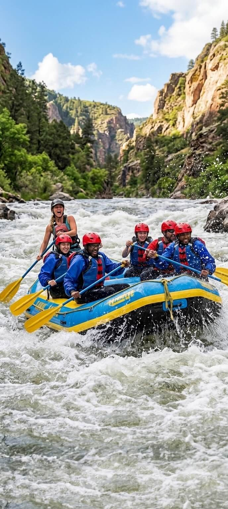
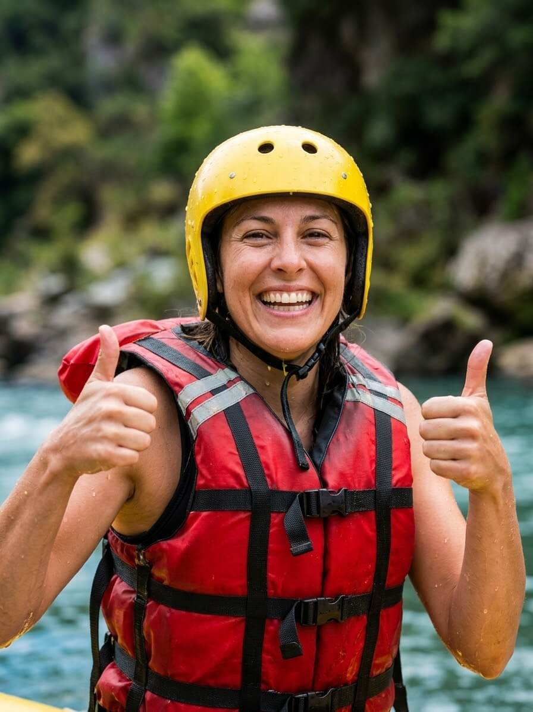
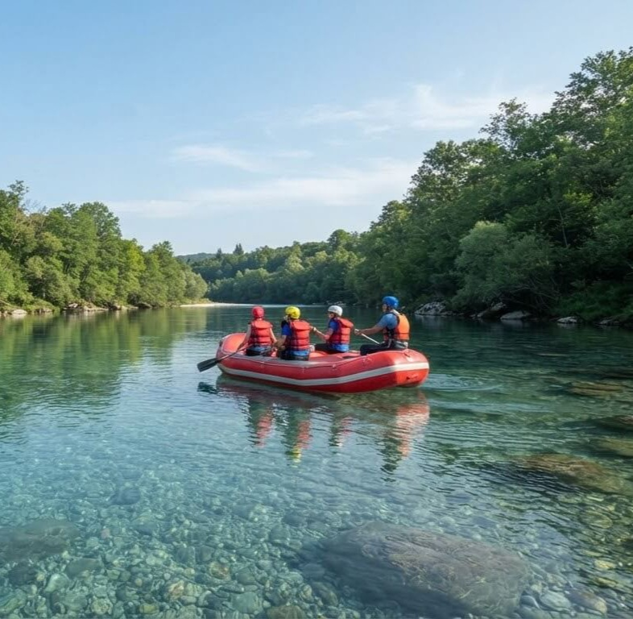
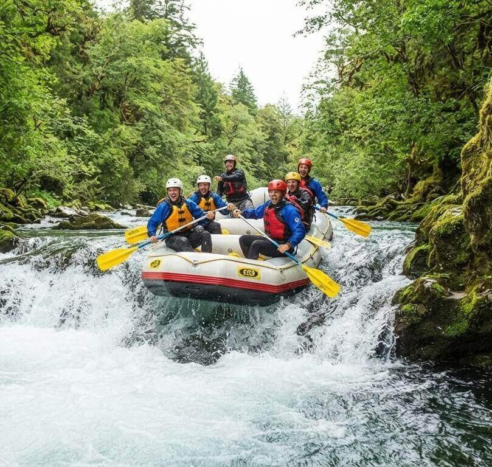
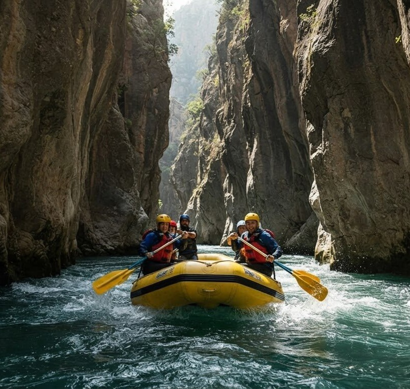
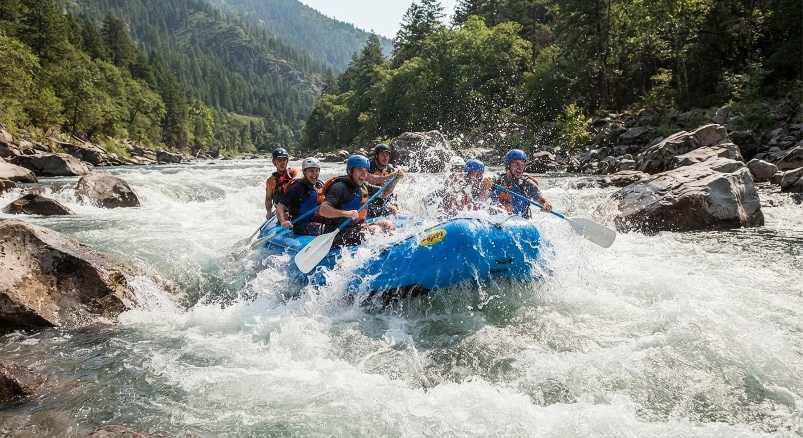
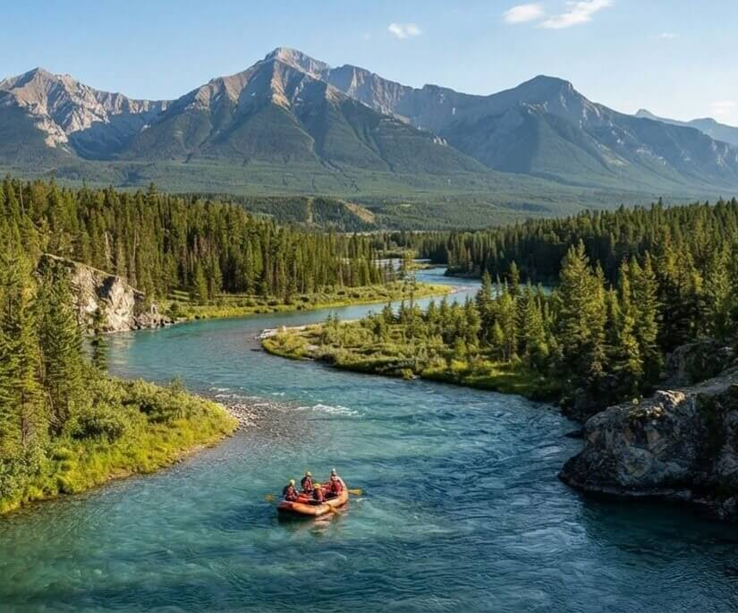

Aventuras nas Corredeiras
Nossa missão é proporcionar experiências inesquecíveis de aventura na natureza, unindo adrenalina, trabalho em equipe, respeito ao meio ambiente e protocolos rigorosos de segurança em cada descida.
História
Fundada por apaixonados por rios, trilhas e esportes ao ar livre, a nossa empresa nasceu com o propósito de tornar o rafting acessível, seguro e envolvente. Desde os primeiros passeios com pequenos grupos, investimos em equipamentos homologados, capacitação contínua dos condutores e planejamento cuidadoso de cada trecho do rio.

Ao longo dos anos, construímos uma reputação sólida baseada no cuidado com cada participante, desde quem entra em um bote pela primeira vez até remadores mais experientes. Cada rota é monitorada conforme o nível das águas e a estação do ano, garantindo que a emoção da aventura caminhe sempre lado a lado com a tranquilidade de uma operação bem estruturada.
A aventura está te esperando!

Trecho com água transparente e boa visibilidade do leito do rio, ideal para ganhar ritmo de remada e apreciar a natureza ao redor.

Descida dinâmica com desnível e borrifos intensos, pensada para quem busca emoção e sincronia da equipe na passagem da queda.

Passagem marcante entre paredões de pedra elevados, criando um cenário imponente com fluxo concentrado e atmosfera única.

Área agitada com ondas e pedras ao longo do percurso, exigindo atenção aos comandos do guia e energia coletiva no bote.

Momento de fluxo mais suave para recuperar o fôlego, conversar com o grupo e contemplar a paisagem das margens.